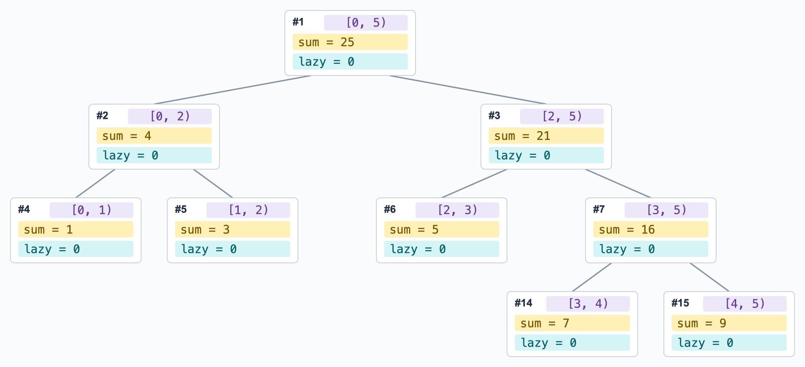

线段树
为什么需要线段树？
-
如果我们想知道数组
arr的任意区间和sum(arr[i:j])，那么维护 前后缀和 是一个不错的选择=> 只需预处理一次、之后所有查询仅需 \(O(1)\)
-
但如果数组中的值需要 被修改呢 ？此时需要重新计算 所有 前后缀和
-
此外，前后缀和也不能提供对区间 最大/最小值 的快速查询支持
-
-
线段树（Segment Tree）就是为维护这类 需要动态修改的区间信息 设计的，可以在 \(O(\log{N})\) 内实现单点修改、单点查询、区间修改，以及区间查询
本文仅介绍最基本的线段树实现（递归建树 + 懒更新）
1 长什么样 + feat.
数组 \([1, 3, 5, 7, 9]\) 构建得到的 "区间和" 线段树如下图所示：
- 每个节点存储的信息为：对应 Range (紫色)、区间信息 (黄色)、Lazy 值 (蓝色)
其中：
-
叶节点对应的区间长度为 1、即存储 单个元素 信息
-
非叶节点 \([l,r)\) 拥有两个区间分别为 \([l,m)\) 和 \([m,r)\) 的子节点、并通过聚合两个子节点的信息得到自身值
为尽可能降低树高、我们需要尽量对半分 => 取 \(m = \lfloor (l+r)/2 \rfloor\)
由此保证构建得到的线段树为 平衡二叉树，树高为 \(\lceil \log_2{N} \rceil\)、令单点操作复杂度为 \(O(\log{N})\)
2 (递归) 建树
-
使用一维数组来存储 ST 树节点。采用标从 1 开始的元素时，满足：\(\text{lchild} = 2*i,\ \text{rchild} = 2*i+1\)
-
数组长度：当存储长度为 \(N\) 的数组信息时，我们需要 \(N\) 个 Leaf Node
最差情况为占用 满二叉树，假设底层有 \(N\) 个节点、此时共 \(2N - 1\) 个点
此时，为最右下节点添加一个 \(rchild\)、其下标为 \(2*(2N-1)+1 = 4N - 1\)
因此，我们最多需要一个长 \(4N\) 的数组（里面会有一些空值）
class SegmentTree:
def __init__(self, nums: list):
self.N = len(nums)
# 初始化数组
self.tree = [0 for _ in range(4*self.N)]
"""self.lazy = [0 for _ in range(4*self.N)]"""
self._buildTree(nums, 1, 0, self.N) # 使用从 1 开始的数组元素（方便计算 l/r）
def _buildTree(self, nums: list, node: int, start: int, end: int):
"""node[node] 对应区间 [l, r)"""
# Leaf: 区间长度为 1，停止递归
if start==end+1:
self.tree[node] = nums[l]
return
# 继续下推
m = (l+r)//2
self._buildTree(nums, 2*node, l, m)
self._buildTree(nums, 2*node+1, m, r)
# 基于两个子节点计算当前节点值
self._pullUp(node)
"""基于左右孩子更新父节点 tree[node] 的值（本实现中为 SUM）"""
def _pullUp(self, node: node): self.tree[node] = self.tree[2*node] + self.tree[2*node+1]
3 单点查询与修改
-
查询
-
若查询到 Leaf Node，则流程终止、返回节点值
-
否则，比较当前节点维护的区间中点
m = (start+end)//2与待查询下标 \(idx\) 的大小，以决定向左/右节点查询
-
-
修改：逻辑与
查询类似，修改要再多一个 Bottom-Up 的_pullUp操作、从而更新所有祖先节点有点像后序遍历的操作？先处理两个子节点、然后再处理当前节点
单点更新参考实现def update(self, idx, value): """将 nums[idx] 修改为 value""" self._update(1, 0, self.N, idx, value) def _update(self, node, l, r, idx, value): # Leaf：递归终点 if r==l+1: self.tree[node] = value return """self._pushDown(node, l, r) # 先 pushDown""" # 判断向左/向右查找 m = (l+r)//2 if idx < m: self._update(2*node, l, m, idx, value) else: self._update(2*node+1, m, r, idx, value) # 更新当前节点值 self._pullUp(node)
4 区间操作
查询
-
对于如上图所示的线段树，对区间
[3:4]的查询过程非常明确从根节点出发，
[0:4] -> R -> [2:4] -> R -> [3:4]即可 -
但对于区间
[1:3]，则需要拆分为多路、并对结果进行聚合：[0:4] -> L -> [0:1] -> R -> [1][0:4] -> R -> [2:4] -> L -> [2][0:4] -> R -> [2:4] -> R -> [3:4] -> R -> [3]
-
如何拆分？
查询的过程本质上是将待查询区间
[l,r]拆分为线段树中的若干不相交子区间被拆分的节点越少越好，这要求所有拆分得到的子区间均为
[l,r]内的 极大区间（首个被 完全包含于[l,r]的节点）
def query(self, l, r):
return self._range_query(1, 0, self.N, l, r)
def _range_query(self, node, start, end, l, r):
# 没有交集
if r<=start or end<=l: return 0
# 递归终点：当前节点被查询区间包裹
if l<=start and end<=r: return self.tree[node]
# 下推 + 聚合
m = (start+end)//2
return(
self._range_query(2*node, start, m, l, r) \
+ \
self._range_query(2*node+1, m, end, l, r)
)
修改与懒标记
不同于单点修改，区间修改（例如，将区间内所有元素 +x）将 同时影响所有祖先节点+子孙节点
-
如果将其视为
n次单点修改 => 显然十分弱智，每个点自顶向下遍历 + 自底向上更新（还有很多重复的） -
因此，我们重磅推出
lazyTag，用以标记对子孙节点（不包括当前节点）需要进行、但暂未执行 的更新操作（值）-
在每次区间修改操作中，我们仅更新 极大区间结点 + 祖先结点
-
对所有 子孙节点 的操作则推迟到必要时再进行（领导真的查到这个点了）
-
一次对区间 [0,5) 的所有元素执行 +2 操作的 lazyTag 变化如下图所示：

"""给 [l,r) 区间增加 delta、记录待下传的 lazy 标记"""
def _applyLazy(self, node, l, r, delta):
self.tree[node] += delta*(r-l) # 和 max/min 操作不一样
self.lazy[node] += delta
"""基于左右孩子更新当前值（SUM）"""
def _pullUp(self, node):
self.tree[node] = self.tree[2*node] + self.tree[2*node+1]
# ---------------------------------------------------------------- #
def range_update(self, l, r, delta):
"""给 nums[l: r] 的每个元素增加 delta"""
self._range_update(1, 0, self.N, l, r, delta)
def _range_update(self, node, start, end, l, r, delta):
# 没有交集、停止
if r<=start or end<=l: return
# 递归终点：更新当前节点、不处理孩子
if l<=start and end<=r:
self._applyLazy(node, start, end, delta)
return
# 继续下推
self._pushDown(node, start, end)
m = (start + end) // 2
self._range_update(2 * node, start, m, l, r, delta)
self._range_update(2 * node + 1, m, end, l, r, delta)
self._pullUp(node)
Ref 与 拓展
本文尚且缺少对于 非递归实现 (zkw 线段树)、动态开点 等技巧，以及在 区间乘积加法混合操作 情况下 lazyTag 变化情况的讨论。可参考以下 blog：
[1] 线段树入门, idle_onlooker
[2] 线段树基础, OI Wiki
添加
lazyTag后的 单点/区间 修改操作均符合以下流程判断是否终止
下推